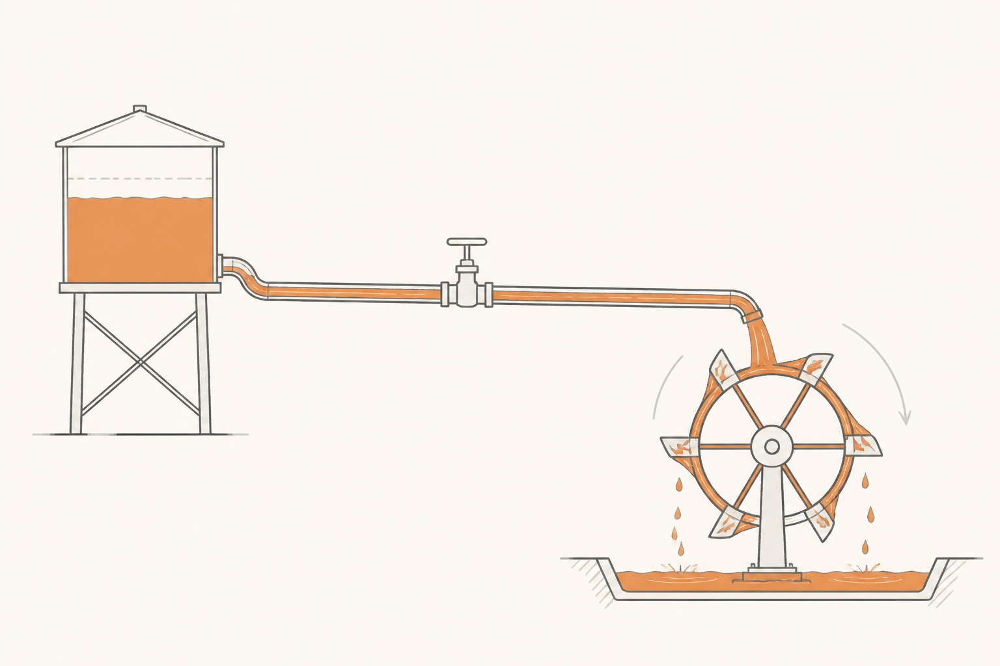

Electricidad mínima viable
La electricidad cotidiana se entiende mucho mejor si la imaginas como agua. No es solo una metáfora bonita: las leyes que describen cómo fluye un líquido por una tubería se parecen tanto a las que describen cómo fluye la corriente por un cable que los ingenieros las usan a propósito para enseñar. Esta píldora aprovecha ese paralelo para que cuando luego oigas voltio, amperio o kilovatio-hora, no sean palabras vacías.
Por qué empezamos por aquí
El resto del curso habla todo el rato de energía: cuánta cabe en una batería, cuánta entra por un cable, cuánta se pierde como calor, cuánta sale por la rueda. Si los conceptos básicos no están claros, las píldoras siguientes se vuelven una sopa de unidades. Diez minutos invertidos aquí ahorran horas más adelante.
Si ya manejas con soltura voltio, amperio, kW, kWh, AC y DC — puedes saltar a la píldora 1 sin remordimientos. Si dudas en alguno, sigue leyendo: no hay matemáticas, solo una analogía y unos cuantos ejemplos.
El circuito de agua
Imagina un depósito de agua elevado, una tubería que baja desde el depósito, un grifo en mitad de la tubería y un molino al final que gira cuando le cae agua encima. Cuatro elementos, ningún misterio. Pues casi todo lo que necesitas saber de electricidad cabe en esa imagen.

Voltaje: la presión
Cuanto más alto esté el depósito, más fuerza empuja el agua hacia abajo. Esa fuerza es presión. En electricidad, el equivalente es el voltaje, que se mide en voltios (V): el "empujón" que un generador, una batería o un enchufe le da a los electrones para que se muevan por el cable.
El enchufe de tu casa empuja a 230 V. La batería de un coche eléctrico empuja a unos 400 V (algunos a 800 V, lo veremos en su píldora). Un cable USB empuja a 5 V. Una pila AA, a 1,5 V. La cifra te dice cuánto "ponche" tiene esa fuente — pero aún no te dice cuánta energía está moviendo. Para eso falta el caudal.
Amperaje: el caudal
Si abres el grifo a tope, sale mucha agua por segundo. Si lo abres apenas, sale un hilito. La cantidad de agua que pasa por un punto en cada segundo es el caudal. El equivalente eléctrico es el amperaje (también llamado intensidad), medido en amperios (A): cuántos electrones pasan por el cable cada segundo.
Una bombilla LED de casa quizá necesite 0,1 A. Un microondas, unos 5 A. Un cargador rápido de coche puede meter 200, 300 o 500 A en la batería. La cifra te dice cuánta cantidad de electricidad está fluyendo en ese momento.
Aquí aparece la primera idea importante: una fuente puede tener mucho voltaje y poco amperaje, o al revés. Una valla eléctrica tiene altísimo voltaje pero apenas amperaje (por eso pega un susto pero no mata). Un cargador rápido tiene voltaje moderado pero muchísimo amperaje (por eso mueve cantidades brutales de energía sin freírte el cable... si lo diseñas bien).
Potencia: el trabajo por segundo
Lo que hace girar el molino del dibujo no es la presión sola, ni el caudal solo: es las dos cosas multiplicadas. Mucha presión y mucho caudal mueven un molino enorme. Poca presión o poco caudal, apenas lo rozan.
En electricidad pasa exactamente igual. La potencia — el trabajo eléctrico que se está haciendo en cada instante — es voltaje × amperaje. Se mide en vatios (W), o más cómodamente en kilovatios (kW), que son mil vatios.
Un cargador de móvil mueve unos 20 W. Una freidora, unos 2 000 W (= 2 kW). Un coche eléctrico circulando por autovía consume unos 20 kW. Un motor de coche eléctrico potente puede entregar 200 o 300 kW en aceleración. Un cargador rápido público entrega 50, 150 o 350 kW. Cuantos más vatios, más trabajo eléctrico está ocurriendo en ese segundo.
Energía: el trabajo acumulado
Ahora atención: potencia y energía no son lo mismo. La potencia es lo que ocurre en un instante. La energía es lo que ocurre acumulado durante un rato.
Volvamos al agua: si el grifo deja salir 10 litros por segundo, ese es su caudal. Pero si lo dejas abierto durante una hora, habrá salido un volumen total de agua mucho mayor. Caudal × tiempo = volumen.
En electricidad: potencia × tiempo = energía. Si un aparato funciona a 1 kW durante una hora, ha consumido 1 kilovatio-hora (kWh) de energía. Si funciona a 2 kW durante media hora, también ha consumido 1 kWh. Si funciona a 100 W durante diez horas, igualmente 1 kWh. La cuenta es siempre la misma.
El kWh es la unidad reina del coche eléctrico, porque mide precisamente lo que cabe en una batería y lo que la red eléctrica te factura. Una batería típica almacena entre 50 y 100 kWh. Tu casa entera consume entre 7 y 15 kWh al día. La factura de la luz se cobra en céntimos por kWh.
AC vs DC: dos formas de moverse
Última pieza, y prepárate porque es contraintuitiva. La electricidad puede fluir de dos maneras distintas.
La corriente continua (DC, direct current) fluye siempre en el mismo sentido. Como el agua de nuestro depósito: baja, baja y baja. Las baterías producen DC. Los paneles solares producen DC. La batería de un coche eléctrico almacena DC.
La corriente alterna (AC, alternating current) oscila: va en un sentido, luego en el otro, luego en el primero, cincuenta veces por segundo (en Europa). Es como si el agua de nuestra tubería avanzara y retrocediera muy rápido. Suena raro, pero hay una razón: la AC se transporta a larga distancia con muchas menos pérdidas, así que la red eléctrica que llega a tu enchufe es AC.
De ahí surge un problema delicioso: el coche necesita DC para cargar la batería, pero el enchufe de casa da AC. Hay que convertir. Esa conversión la hace una pieza llamada cargador a bordo (OBC) que vive dentro del coche. Y aquí ya estás dentro del curso de verdad.
Resumen en cinco líneas
Si te llevas solo cinco frases de esta píldora, que sean estas:
Voltio (V) es presión: cuánta fuerza empuja a los electrones. Amperio (A) es caudal: cuántos electrones pasan por segundo. Kilovatio (kW) es potencia: V × A, el trabajo eléctrico que ocurre en este instante. Kilovatio-hora (kWh) es energía: trabajo acumulado durante una hora. AC oscila, DC va en un sentido — las baterías son DC, la red es AC, y el coche necesita un traductor.
Fácil¿Qué unidad mide la energía que cabe en una batería: kW o kWh?
kWh. El kW mide la potencia (trabajo por segundo, instantáneo); el kWh mide la energía total acumulada. Una batería se describe por cuánta energía puede almacenar — 50 kWh, 80 kWh, 100 kWh — no por la potencia que entrega.
FácilUna bombilla de 100 W encendida durante 10 horas, ¿cuánta energía consume?
1 kWh. Cien vatios durante diez horas son 1 000 vatios-hora, que es lo mismo que 1 kilovatio-hora. La cuenta es potencia × tiempo, sin más.
MedioSi un cargador entrega 50 kW y la batería del coche tiene 75 kWh vacíos, ¿cuánto tarda en llenarla?
En teoría, 1,5 horas (75 ÷ 50). En la práctica, más, porque la potencia que el coche acepta no es constante: baja al acercarse al 100% (lo veremos en la píldora 9). Pero la cuenta básica energía ÷ potencia = tiempo es exacta.
Medio¿Por qué la red eléctrica reparte AC en lugar de DC, si las baterías y los aparatos electrónicos funcionan con DC?
Porque la AC se puede subir y bajar de voltaje fácilmente con un transformador, lo que permite transportarla a altísimo voltaje (cientos de miles de voltios) por las líneas de alta tensión. A más voltaje, menos corriente, y menos pérdidas en el cable. Si la red fuera DC, esa transformación sería mucho más complicada con la tecnología histórica. Hoy ya empieza a haber transporte en DC de alto voltaje (HVDC) para casos especiales, pero la red sigue siendo principalmente AC por inercia y compatibilidad.